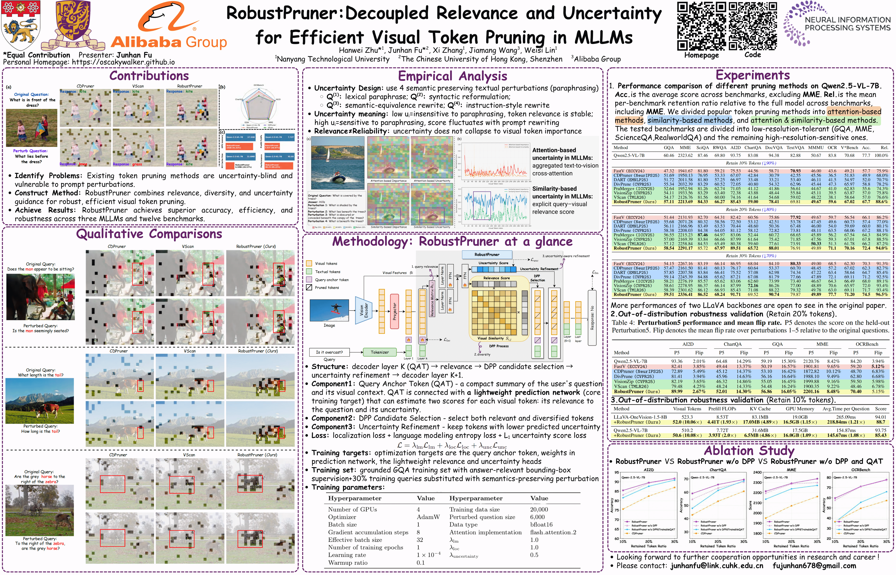
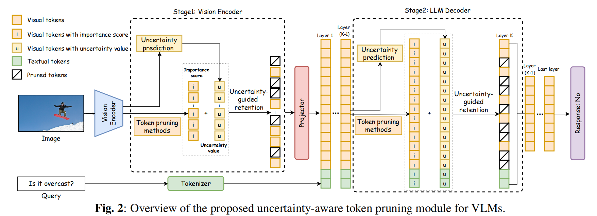
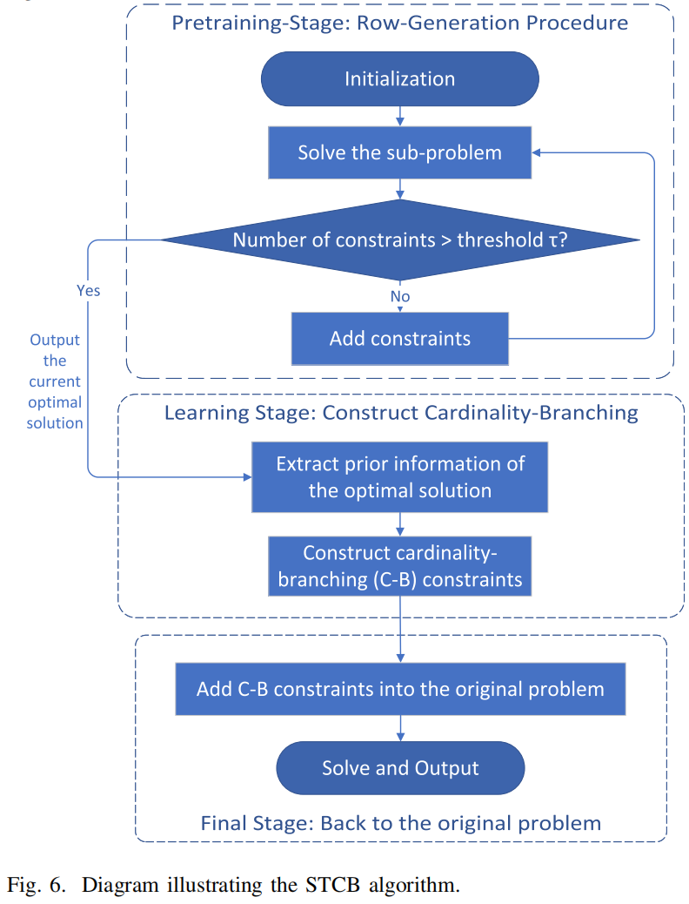
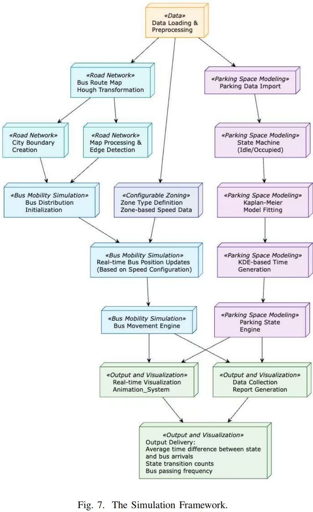

Undergraduate Senior · Data Science
Hi, I am Junhan (Oscar) Fu, an undergraduate student at The Chinese University of Hong Kong, Shenzhen.
I work on multimodal intelligence, speech understanding, and data-driven optimization.
Research Experience
-
Shenzhen Research Institute of Big Data (SRIBD)
Speech Algorithm Research Assistant · Prof. Benyou WangDeveloping hierarchical speech representations and a Caption-TTS dual learning framework for fine-grained, controllable speech understanding.
Feb 2026 – Present
Shenzhen, China -
Alibaba–NTU Global e-Sustainability CorpLab (ANGEL), NTU
Multimodal Architecture Research Assistant · Prof. Weisi LinDesigning uncertainty-aware token pruning methods that preserve critical visual evidence while improving multimodal inference efficiency.
Nov 2025 – Present
Singapore -
The Chinese University of Hong Kong, Shenzhen
Data Simulation & Optimization Research Assistant · Prof. Ruizhi LiaoBuilding simulation and integer-programming tools for scalable parking sensing, including BusScan and the STCB optimization algorithm in urban crowdsensing systems.
Sep 2024 – Mar 2026
Shenzhen, China
Selected Publications
-
NeurIPS 2026

RobustPruner: Decoupled Relevance and Uncertainty for Efficient Visual Token Pruning in Multimodal Large Language Models Co-first author
NeurIPS 2026 (Accepted)
-
IEEE ICIP 2026

Prune With Confidence: Uncertainty-Calibrated Token Selection for Vision-Language Models
ICIP 2026 Satellite Workshop (Fourth IEEE Workshop on Coding for Machines), 2026
🏆 BEST PAPER AWARD RUNNER-UP -
IEEE IoTJ

System-Level Optimization of Crowdsensing Sensor Allocation for Urban Parking in Smart Cities
IEEE Internet of Things Journal, 2026
-
IEEE ITSC 2025

Work Experience
-
Inspur Group (Inspur Communication Information System Co., Ltd.)
Software R&D InternDesigning functional, performance, and security tests for China Mobile's LLM and agent scheduling platform, and developing AI-assisted automated testing workflows with uiautomator2 and Allure, leveraging Codex and Trae to automate test script generation and regression testing, improving testing efficiency and coverage
Jun 2026 – Sep 2026
Nanjing, China -
MY Capital (Hainan) Private Fund Management Partnership
Quantitative-AI Research InternBuilt an interpretable ST/*ST risk prediction pipeline based on regulatory criteria and announcement text, reaching 82% recall with a false-positive rate below 0.2%. The resulting model was applied to the company’s subsequent technology iterations.
Jan 2026 – May 2026
Shenzhen, China -
Capgemini Consulting
Machine Learning InternDeveloped enterprise data pipelines, NLP and vision-language models, and monitoring dashboards for more than 50,000 public-opinion records in the new-energy vehicle industry. The developed system was adopted as a prototype for the company's subsequent production tasks.
June 2025 – Aug 2025
Shanghai, China -
U.S. Stock Market Factor Analysis
Project · Mentored by a Citadel Senior AssociateAnalyzed eight U.S. equity factors and optimized dynamic allocation with GLD and VIX hedges, achieving a 34.33% annualized return and a 2.94 Sharpe ratio in the project evaluation.
Dec 2025 – Jan 2026
Shenzhen, China
Education
-
The Chinese University of Hong Kong, Shenzhen
B.S. in Data Science and Big Data Technology · Financial StreamMajor GPA 3.907/4.0 · Cumulative GPA 3.838/4.0 · Rank 10/162
Expected June 2027
Shenzhen, China -
Nanyang Technological University
Exchange Student · AY2025 Study Abroad AmbassadorMajor GPA 4.63/5.0
Aug 2025 – Dec 2025
Singapore -
University of California, Berkeley
Summer Visiting StudentMajor GPA 3.9/4.0
Jun 2024 – Aug 2024
Berkeley, California
Honours
- Dean's List, CUHK-Shenzhen 2024, 2025
- Undergraduate Research Award, CUHK-Shenzhen 2025
- First Prize, South China Region, National College Computer Capability Union 2025
- Third Prize, Provincial Level, CUMCM 2026
- Outstanding Report Award, Financial Investment Planning Competition 2025